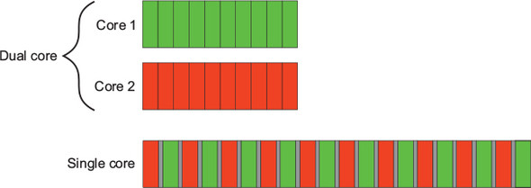
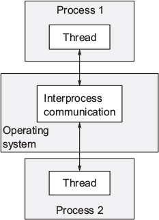
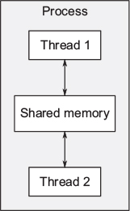

This chapter covers
These are exciting times for C++ users. Thirteen years after the original C++ Standard was published in 1998, the C++ Standards Committee gave the language and its supporting library a major overhaul. The new C++ Standard (referred to as C++11 or C++0x) was published in 2011 and brought with it a swath of changes that made working with C++ easier and more productive. The Committee also committed to a new “train model” of releases, with a new C++ Standard to be published every three years. So far, we’ve had two of these publications: the C++14 Standard in 2014, and the C++17 Standard in 2017, as well as several Technical Specifications describing extensions to the C++ Standard.
One of the most significant new features in the C++11 Standard was the support of multithreaded programs. For the first time, the C++ Standard acknowledged the existence of multithreaded applications in the language and provided components in the library for writing multithreaded applications. This made it possible to write multithreaded C++ programs without relying on platform-specific extensions and enabled you to write portable multithreaded code with guaranteed behavior. It also came at a time when programmers were increasingly looking to concurrency in general, and multithreaded programming in particular, to improve application performance. The C++14 and C++17 Standards have built upon this baseline to provide further support for writing multithreaded programs in C++, as have the Technical Specifications. There’s a Technical Specification for concurrency extensions, and another for parallelism, though the latter has been incorporated into C++17.
This book is about writing programs in C++ using multiple threads for concurrency and the C++ language features and library facilities that make it possible. I’ll start by explaining what I mean by concurrency and multithreading and why you would want to use concurrency in your applications. After a quick detour into why you might not want to use it in your applications, we’ll go through an overview of the concurrency support in C++, and we’ll round off this chapter with a simple example of C++ concurrency in action. Readers experienced with developing multithreaded applications may wish to skip the early sections. In subsequent chapters, we’ll cover more extensive examples and look at the library facilities in more depth. The book will finish with an in-depth reference to all the C++ Standard Library facilities for multithreading and concurrency.
So, what do I mean by concurrency and multithreading?
At the simplest and most basic level, concurrency is about two or more separate activities happening at the same time. We encounter concurrency as a natural part of life; we can walk and talk at the same time or perform different actions with each hand, and we each go about our lives independently of each other—you can watch football while I go swimming, and so on.
When we talk about concurrency in terms of computers, we mean a single system performing multiple independent activities in parallel, rather than sequentially, or one after the other. This isn’t a new phenomenon. Multitasking operating systems that allow a single desktop computer to run multiple applications at the same time through task switching have been commonplace for many years, as have high-end server machines with multiple processors that enable genuine concurrency. What’s new is the increased prevalence of computers that can genuinely run multiple tasks in parallel rather than giving the illusion of doing so.
Historically, most desktop computers have had one processor, with a single processing unit or core, and this remains true for many desktop machines today. Such a machine can only perform one task at a time, but it can switch between tasks many times per second. By doing a bit of one task and then a bit of another and so on, it appears that the tasks are happening concurrently. This is called task switching. We still talk about concurrency with such systems; because the task switches are so fast, you can’t tell at which point a task may be suspended as the processor switches to another one. The task switching provides the illusion of concurrency to both the user and the applications themselves. Because there is only the illusion of concurrency, the behavior of applications may be subtly different when executing in a single-processor task-switching environment compared to when executing in an environment with true concurrency. In particular, incorrect assumptions about the memory model (covered in chapter 5) may not show up in such an environment. This is discussed in more depth in chapter 10.
Computers containing multiple processors have been used for servers and high-performance computing tasks for years, and computers based on processors with more than one core on a single chip (multicore processors) are becoming increasingly common as desktop machines. Whether they have multiple processors or multiple cores within a processor (or both), these computers are capable of genuinely running more than one task in parallel. We call this hardware concurrency.
Figure 1.1 shows an idealized scenario of a computer with precisely two tasks to do, each divided into 10 equally sized chunks. On a dual-core machine (which has two processing cores), each task can execute on its own core. On a single-core machine doing task switching, the chunks from each task are interleaved. But they are also spaced out a bit (in figure 1.1, this is shown by the gray bars separating the chunks being thicker than the separator bars shown for the dual-core machine); in order to do the interleaving, the system has to perform a context switch every time it changes from one task to another, and this takes time. In order to perform a context switch, the OS has to save the CPU state and instruction pointer for the currently running task, work out which task to switch to, and reload the CPU state for the task being switched to. The CPU will then potentially have to load the memory for the instructions and data for the new task into the cache, which can prevent the CPU from executing any instructions, causing further delay.

Though the availability of concurrency in the hardware is most obvious with multiprocessor or multicore systems, some processors can execute multiple threads on a single core. The important factor to consider is the number of hardware threads, which is the measure of how many independent tasks the hardware can genuinely run concurrently. Even with a system that has genuine hardware concurrency, it’s easy to have more tasks than the hardware can run in parallel, so task switching is still used in these cases. For example, on a typical desktop computer there may be hundreds of tasks running, performing background operations, even when the computer is nominally idle. It’s the task switching that allows these background tasks to run and you to run your word processor, compiler, editor, and web browser (or any combination of applications) all at once. Figure 1.2 shows task switching among four tasks on a dual-core machine, again for an idealized scenario with the tasks divided neatly into equally sized chunks. In practice, many issues will make the divisions uneven and the scheduling irregular. Some of these issues are covered in chapter 8 when we look at factors affecting the performance of concurrent code.
All the techniques, functions, and classes covered in this book can be used whether your application is running on a machine with one single-core processor or with many multicore processors, and are not affected by whether the concurrency is achieved through task switching or by genuine hardware concurrency. But as you may imagine, how you make use of concurrency in your application may well depend on the amount of hardware concurrency available. This is covered in chapter 8, where I discuss the issues involved in designing concurrent code in C++.
Imagine, for a moment, a pair of programmers working together on a software project. If your developers are in separate offices, they can go about their work peacefully, without being disturbed by each other, and they each have their own set of reference manuals. But communication isn’t straightforward; rather than turning around and talking to each other, they have to use the phone or email, or get up and walk to the other’s office. Also, you have the overhead of two offices to manage and multiple copies of reference manuals to purchase.
Now imagine that you move your developers into the same office. They can now talk to each other freely to discuss the design of the application, and they can easily draw diagrams on paper or on a whiteboard to help with design ideas or explanations. You have only one office to manage, and one set of resources will often suffice. On the negative side, they might find it harder to concentrate, and there may be issues with sharing resources (“Where’s the reference manual gone now?”).
These two ways of organizing your developers illustrate the two basic approaches to concurrency. Each developer represents a thread, and each office represents a process. The first approach is to have multiple single-threaded processes, which is similar to having each developer in their own office, and the second approach is to have multiple threads in a single process, which is like having two developers in the same office. You can combine these in an arbitrary fashion and have multiple processes, some of which are multithreaded and some of which are single-threaded, but the principles are the same. Let’s now have a brief look at these two approaches to concurrency in an application.
The first way to make use of concurrency within an application is to divide the application into multiple, separate, single-threaded processes that are run at the same time, much as you can run your web browser and word processor at the same time. These separate processes can then pass messages to each other through all the normal interprocess communication channels (signals, sockets, files, pipes, and so on), as shown in figure 1.3. One downside is that such communication between processes is often either complicated to set up or slow, or both, because operating systems typically provide a lot of protection between processes to avoid one process accidentally modifying data belonging to another process. Another downside is that there’s an inherent overhead in running multiple processes: it takes time to start a process, the operating system must devote internal resources to managing the process, and so forth.

It’s not all negative: the added protection operating systems typically provide between processes and the higher-level communication mechanisms mean that it can be easier to write safe concurrent code with processes rather than threads. Indeed, environments such as that provided for the Erlang (www.erlang.org/) programming language use processes as the fundamental building block of concurrency to great effect.
Using separate processes for concurrency also has an additional advantage—you can run the separate processes on distinct machines connected over a network. Though this increases the communication cost, on a carefully designed system it can be a cost-effective way of increasing the available parallelism and improving performance.
The alternative approach to concurrency is to run multiple threads in a single process. Threads are much like lightweight processes: each thread runs independently of the others, and each may run a different sequence of instructions. But all threads in a process share the same address space, and most of the data can be accessed directly from all threads—global variables remain global, and pointers or references to objects or data can be passed around among threads. Although it’s often possible to share memory among processes, this is complicated to set up and often hard to manage, because memory addresses of the same data aren’t necessarily the same in different processes. Figure 1.4 shows two threads within a process communicating through shared memory.

The shared address space and lack of protection of data between threads makes the overhead associated with using multiple threads much smaller than that from using multiple processes, because the operating system has less bookkeeping to do. But the flexibility of shared memory also comes with a price: if data is accessed by multiple threads, the application programmer must ensure that the view of data seen by each thread is consistent whenever it’s accessed. The issues surrounding sharing data between threads, and the tools to use and guidelines to follow to avoid problems, are covered throughout this book, notably in chapters 3, 4, 5, and 8. The problems aren’t insurmountable, provided suitable care is taken when writing the code, but they do mean that a great deal of thought must go into the communication between threads.
The low overhead associated with launching and communicating between multiple threads within a process compared to launching and communicating between multiple single-threaded processes means that this is the favored approach to concurrency in mainstream languages, including C++, despite the potential problems arising from the shared memory. In addition, the C++ Standard doesn’t provide any intrinsic support for communication between processes, so applications that use multiple processes will have to rely on platform-specific APIs to do so. This book therefore focuses exclusively on using multithreading for concurrency, and future references to concurrency assume that this is achieved by using multiple threads.
There’s another word that gets used a lot around multithreaded code: parallelism. Let’s clarify the differences.
Concurrency and parallelism have largely overlapping meanings with respect to multithreaded code. Indeed, to many they mean the same thing. The difference is primarily a matter of nuance, focus, and intent. Both terms are about running multiple tasks simultaneously, using the available hardware, but parallelism is much more performance-oriented. People talk about parallelism when their primary concern is taking advantage of the available hardware to increase the performance of bulk data processing, whereas people talk about concurrency when their primary concern is separation of concerns, or responsiveness. This dichotomy is not cut and dried, and there is still considerable overlap in meaning, but it can help clarify discussions to know of this distinction. Throughout this book, there will be examples of both.
Having clarified what we mean by concurrency and parallelism, let’s look at why you would use concurrency in your applications.
There are two main reasons to use concurrency in an application: separation of concerns and performance. In fact, I’d go so far as to say that they’re almost the only reasons to use concurrency; anything else boils down to one or the other (or maybe even both) when you look hard enough (well, except for reasons like “because I want to”).
Separation of concerns is almost always a good idea when writing software; by grouping related bits of code together and keeping unrelated bits of code apart, you can make your programs easier to understand and test, and less likely to contain bugs. You can use concurrency to separate distinct areas of functionality, even when the operations in these distinct areas need to happen at the same time; without the explicit use of concurrency, you either have to write a task-switching framework or actively make calls to unrelated areas of code during an operation.
Consider a processing-intensive application with a user interface, such as a DVD player application for a desktop computer. This application fundamentally has two sets of responsibilities. Not only does it have to read the data from the disk, decode the images and sound, and send them to the graphics and sound hardware in a timely fashion so the DVD plays without glitches, but it must also take input from the user, such as when the user clicks Pause or Return To Menu, or even Quit. In a single thread, the application has to check for user input at regular intervals during the playback, conflating the DVD playback code with the user interface code. By using multithreading to separate these concerns, the user interface code and DVD playback code no longer have to be so closely intertwined; one thread can handle the user interface and another the DVD playback. There will have to be interaction between them, such as when the user clicks Pause, but now these interactions are directly related to the task at hand.
This gives the illusion of responsiveness, because the user interface thread can typically respond immediately to a user request, even if the response is to display a busy cursor or a Please Wait message while the request is conveyed to the thread doing the work. Similarly, separate threads are often used to run tasks that must run continuously in the background, such as monitoring the filesystem for changes in a desktop search application. Using threads in this way generally makes the logic in each thread much simpler, because the interactions between them can be limited to clearly identifiable points, rather than having to intersperse the logic of the different tasks.
In this case, the number of threads is independent of the number of CPU cores available, because the division into threads is based on the conceptual design rather than an attempt to increase throughput.
Multiprocessor systems have existed for decades, but until recently they were mostly found only in supercomputers, mainframes, and large server systems. But chip manufacturers have increasingly been favoring multicore designs with 2, 4, 16, or more processors on a single chip over better performance with a single core. Consequently, multicore desktop computers, and even multicore embedded devices, are now increasingly prevalent. The increased computing power of these machines comes not from running a single task faster but from running multiple tasks in parallel. In the past, programmers have been able to sit back and watch their programs get faster with each new generation of processors, without any effort on their part. But now, as Herb Sutter put it, “The free lunch is over.”[1] If software is to take advantage of this increased computing power, it must be designed to run multiple tasks concurrently. Programmers must therefore take heed, and those who have hitherto ignored concurrency must now look to add it to their toolbox.
“The Free Lunch Is Over: A Fundamental Turn Toward Concurrency in Software,” Herb Sutter, Dr. Dobb’s Journal, 30(3), March 2005. http://www.gotw.ca/publications/concurrency-ddj.htm.
There are two ways to use concurrency for performance. The first, and most obvious, is to divide a single task into parts and run each in parallel, reducing the total runtime. This is task parallelism. Although this sounds straightforward, it can be quite a complex process, because there may be many dependencies between the various parts. The divisions may be either in terms of processing—one thread performs one part of the algorithm while another thread performs a different part—or in terms of data—each thread performs the same operation on different parts of the data. This latter approach is called data parallelism.
Algorithms that are readily susceptible to such parallelism are frequently called embarrassingly parallel. Despite the implication that you might be embarrassed to have code so easy to parallelize, this is a good thing; other terms I’ve encountered for such algorithms are naturally parallel and conveniently concurrent. Embarrassingly parallel algorithms have good scalability properties—as the number of available hardware threads goes up, the parallelism in the algorithm can be increased to match. Such an algorithm is the perfect embodiment of the adage, “Many hands make light work.” For those parts of the algorithm that aren’t embarrassingly parallel, you might be able to divide the algorithm into a fixed (and therefore not scalable) number of parallel tasks. Techniques for dividing tasks between threads are covered in chapters 8 and 10.
The second way to use concurrency for performance is to use the available parallelism to solve bigger problems; rather than processing one file at a time, process 2, or 10, or 20, as appropriate. Although this is an application of data parallelism, by performing the same operation on multiple sets of data concurrently, there’s a different focus. It still takes the same amount of time to process one chunk of data, but now more data can be processed in the same amount of time. Obviously, there are limits to this approach, and this won’t be beneficial in all cases, but the increase in throughput that comes from this approach can make new things possible—increased resolution in video processing, for example, if different areas of the picture can be processed in parallel.
It’s just as important to know when not to use concurrency as it is to know when to use it. Fundamentally, the only reason not to use concurrency is when the benefit isn’t worth the cost. Code using concurrency is harder to understand in many cases, so there’s a direct intellectual cost to writing and maintaining multithreaded code, and the additional complexity can also lead to more bugs. Unless the potential performance gain is large enough or the separation of concerns is clear enough to justify the additional development time required to get it right and the additional costs associated with maintaining multithreaded code, don’t use concurrency.
Also, the performance gain might not be as large as expected; there’s an inherent overhead associated with launching a thread, because the OS has to allocate the associated kernel resources and stack space and then add the new thread to the scheduler, all of which takes time. If the task being run on the thread is completed quickly, the time taken by the task may be dwarfed by the overhead of launching the thread, possibly making the overall performance of the application worse than if the task had been executed directly by the spawning thread.
Furthermore, threads are a limited resource. If you have too many threads running at once, this consumes OS resources and may make the system as a whole run slower. Not only that, but using too many threads can exhaust the available memory or address space for a process, because each thread requires a separate stack space. This is particularly a problem for 32-bit processes with a flat architecture where there’s a 4 GB limit to the available address space: if each thread has a 1 MB stack (as is typical on many systems), then the address space would be used up with 4,096 threads, without allowing any space for code, static data, or heap data. Although 64-bit (or larger) systems don’t have this direct address-space limit, they still have finite resources: if you run too many threads, this will eventually cause problems. Though thread pools (see chapter 9) can be used to limit the number of threads, they aren’t a silver bullet, and they do have their own issues.
If the server side of a client/server application launches a separate thread for each connection, this will work fine for a small number of connections, but can quickly exhaust system resources by launching too many threads if the same technique is used for a high-demand server that has to handle many connections. In this scenario, careful use of thread pools can provide optimal performance (see chapter 9).
Finally, the more threads you have running, the more context switching the operating system has to do. Each context switch takes time that could be spent doing useful work, so at some point, adding an extra thread will reduce the overall application performance rather than increase it. For this reason, if you’re trying to achieve the best possible performance of the system, it’s necessary to adjust the number of threads running to take into account the available hardware concurrency (or lack of it).
The use of concurrency for performance is like any other optimization strategy: it has the potential to greatly improve the performance of your application, but it can also complicate the code, making it harder to understand and more prone to bugs. Therefore, it’s only worth doing for those performance-critical parts of the application where there’s the potential for measurable gain. Of course, if the potential for performance gains is only secondary to clarity of design or separation of concerns, it may still be worth using a multithreaded design.
Assuming that you’ve decided you do want to use concurrency in your application, whether for performance, separation of concerns, or because it’s “multithreading Monday,” what does that mean for C++ programmers?
Standardized support for concurrency through multithreading is a relatively new thing for C++. It’s only since the C++11 Standard that you’ve been able to write multithreaded code without resorting to platform-specific extensions. In order to understand the rationale behind lots of the decisions in the Standard C++ Thread Library, it’s important to understand the history.
The 1998 C++ Standard doesn’t acknowledge the existence of threads, and the operational effects of the various language elements are written in terms of a sequential abstract machine. Not only that, but the memory model isn’t formally defined, so you can’t write multithreaded applications without compiler-specific extensions to the 1998 C++ Standard.
Compiler vendors are free to add extensions to the language, and the prevalence of C APIs for multithreading—such as those in the POSIX C standard and the Microsoft Windows API—has led many C++ compiler vendors to support multithreading with various platform-specific extensions. This compiler support is generally limited to allowing the use of the corresponding C API for the platform and ensuring that the C++ Runtime Library (such as the code for the exception-handling mechanism) works in the presence of multiple threads. Although few compiler vendors have provided a formal multithreading-aware memory model, the behavior of the compilers and processors has been sufficiently good that a large number of multithreaded C++ programs have been written.
Not content with using the platform-specific C APIs for handling multithreading, C++ programmers have looked to their class libraries to provide object-oriented multithreading facilities. Application frameworks, such as MFC, and general-purpose C++ libraries, such as Boost and ACE, have accumulated sets of C++ classes that wrap the underlying platform-specific APIs and provide higher-level facilities for multithreading that simplify tasks. Although the precise details of the class libraries vary considerably, particularly in the area of launching new threads, the overall shape of the classes has a lot in common. One particularly important design that’s common to many C++ class libraries, and that provides considerable benefit to the programmer, is the use of the Resource Acquisition Is Initialization (RAII) idiom with locks to ensure that mutexes are unlocked when the relevant scope is exited.
For many cases, the multithreading support of existing C++ compilers combined with the availability of platform-specific APIs and platform-independent class libraries, such as Boost and ACE, provide a solid foundation on which to write multithreaded C++ code, and as a result, there are probably millions of lines of C++ code written as part of multithreaded applications. But the lack of standard support means that there are occasions where the lack of a thread-aware memory model causes problems, particularly for those who try to gain higher performance by using knowledge of the processor hardware or for those writing cross-platform code where the behavior of the compilers varies between platforms.
All this changed with the release of the C++11 Standard. Not only is there a thread-aware memory model, but the C++ Standard Library was extended to include classes for managing threads (see chapter 2), protecting shared data (see chapter 3), synchronizing operations between threads (see chapter 4), and low-level atomic operations (see chapter 5).
The C++11 Thread Library is heavily based on the prior experience accumulated through the use of the C++ class libraries mentioned previously. In particular, the Boost Thread Library was used as the primary model on which the new library is based, with many of the classes sharing their names and structure with the corresponding ones from Boost. As the standard has evolved, this has been a two-way flow, and the Boost Thread Library has itself changed to match the C++ Standard in many respects, so users transitioning from Boost should find themselves at home.
Concurrency support is one of the changes with the C++11 Standard—as mentioned at the beginning of this chapter, there are many enhancements to the language to make programmers’ lives easier. Although these are generally outside the scope of this book, some of those changes have had a direct impact on the Thread Library and the ways in which it can be used. Appendix A provides a brief introduction to these language features.
The only specific support for concurrency and parallelism added in C++14 was a new mutex type for protecting shared data (see chapter 3). But C++17 adds considerably more: a full suite of parallel algorithms (see chapter 10) for starters. Both of these Standards enhance the core language and the rest of the Standard Library, and these enhancements can simplify the writing of multithreaded code.
As mentioned previously, there’s also a Technical Specification for concurrency, which describes extensions to the functions and classes provided by the C++ Standard, especially around synchronizing operations between threads (see chapter 4).
The support for atomic operations directly in C++ enables programmers to write efficient code with defined semantics without the need for platform-specific assembly language. This is a real boon for those trying to write efficient, portable code; not only does the compiler take care of the platform specifics, but the optimizer can be written to take into account the semantics of the operations, enabling better optimization of the program as a whole.
One of the concerns that developers involved in high-performance computing often raise regarding C++ in general, and C++ classes that wrap low-level facilities—such as those in the new Standard C++ Thread Library specifically—is that of efficiency. If you’re after the utmost in performance, it’s important to understand the implementation costs associated with using any high-level facilities, compared to using the underlying low-level facilities directly. This cost is the abstraction penalty.
The C++ Standards Committee was aware of this when designing the C++ Standard Library in general and the Standard C++ Thread Library in particular; one of the design goals has been that there should be little or no benefit to be gained from using the lower-level APIs directly, where the same facility is to be provided. The library has therefore been designed to allow for efficient implementation (with a low abstraction penalty) on most major platforms.
Another goal of the C++ Standards Committee has been to ensure that C++ provides sufficient low-level facilities for those wishing to work close to the metal for the ultimate performance. To this end, along with the new memory model comes a comprehensive atomic operations library for direct control over individual bits and bytes and the inter-thread synchronization and visibility of any changes. These atomic types and the corresponding operations can now be used in many places where developers would previously have chosen to drop down to platform-specific assembly language. Code using the new standard types and operations is more portable and easier to maintain.
The C++ Standard Library also provides higher-level abstractions and facilities that make writing multithreaded code easier and less error-prone. Sometimes the use of these facilities comes with a performance cost because of the additional code that must be executed. But this performance cost doesn’t necessarily imply a higher abstraction penalty; in general, the cost is no higher than would be incurred by writing equivalent functionality by hand, and the compiler may inline much of the additional code anyway.
In some cases, the high-level facilities provide additional functionality beyond what may be required for a specific use. Most of the time this isn’t an issue: you don’t pay for what you don’t use. On rare occasions, this unused functionality will impact the performance of other code. If you’re aiming for performance and the cost is too high, you may be better off handcrafting the desired functionality from lower-level facilities. In the vast majority of cases, the additional complexity and chance of errors far outweigh the potential benefits from a small performance gain. Even if profiling does demonstrate that the bottleneck is in the C++ Standard Library facilities, it may be due to poor application design rather than a poor library implementation. For example, if too many threads are competing for a mutex, it will impact the performance significantly. Rather than trying to shave a small fraction of time off the mutex operations, it would probably be more beneficial to restructure the application so that there’s less contention on the mutex. Designing applications to reduce contention is covered in chapter 8.
In those rare cases where the C++ Standard Library doesn’t provide the performance or behavior required, it might be necessary to use platform-specific facilities.
Although the C++ Thread Library provides reasonably comprehensive facilities for multithreading and concurrency, on any given platform there will be platform-specific facilities that go beyond what’s offered. In order to gain easy access to those facilities without giving up the benefits of using the Standard C++ Thread Library, the types in the C++ Thread Library may offer a native_handle() member function that allows the underlying implementation to be directly manipulated using a platform-specific API. By its nature, any operations performed using native_handle() are entirely platform dependent and beyond of the scope of this book (and the Standard C++ Library itself).
Before even considering using platform-specific facilities, it’s important to understand what the Standard Library provides, so let’s get started with an example.
OK, so you have a nice, shiny C++11/C++14/C++17 compiler. What’s next? What does a multithreaded C++ program look like? It looks much like any other C++ program, with the usual mix of variables, classes, and functions. The only real distinction is that some functions might be running concurrently, so you need to ensure that shared data is safe for concurrent access, as described in chapter 3. In order to run functions concurrently, specific functions and objects must be used to manage the different threads.
Let’s start with a classic example: a program to print “Hello World.” A simple Hello World program that runs in a single thread is shown here, to serve as a baseline when we move to multiple threads:
#include <iostream>
int main()
{
std::cout<<"Hello World\n";
}
All this program does is write “Hello World” to the standard output stream. Let’s compare it to the simple Hello Concurrent World program shown in the following listing, which starts a separate thread to display the message.
#include <iostream>
#include <thread>
void hello()
{
std::cout<<"Hello Concurrent World\n";
}
int main()
{
std::thread t(hello); 3
t.join();
}
The first difference is the extra #include <thread>. The declarations for the multithreading support in the Standard C++ Library are in new headers: the functions and classes for managing threads are declared in <thread>, whereas those for protecting shared data are declared in other headers.
Second, the code for writing the message has been moved to a separate function. This is because every thread has to have an initial function, where the new thread of execution begins. For the initial thread in an application, this is main(), but for every other thread it’s specified in the constructor of a std::thread object—in this case, the std::thread object named t has the new hello() function as its initial function.
This is the next difference: rather than writing directly to standard output or calling hello() from main(), this program launches a new thread to do it, bringing the thread count to two—the initial thread that starts at main() and the new thread that starts at hello().
After the new thread has been launched, the initial thread continues execution. If it didn’t wait for the new thread to finish, it would merrily continue to the end of main() and end the program—possibly before the new thread had a chance to run. This is why the call to join() is there—as described in chapter 2, this causes the calling thread (in main()) to wait for the thread associated with the std::thread object, in this case, t.
If this seems like a lot of effort to write a message to standard output, it is—as described in section 1.2.3, it’s generally not worth the effort to use multiple threads for such a simple task, especially if the initial thread has nothing to do in the meantime. Later in the book, you’ll work through examples of scenarios where there’s a clear gain to using multiple threads.
In this chapter, I covered what’s meant by concurrency and multithreading and why you’d choose to use it (or not) in your applications. I also covered the history of multithreading in C++, from the complete lack of support in the 1998 standard, through various platform-specific extensions, to proper multithreading support in the C++11 Standard, and on to the C++14 and C++17 standards and the Technical Specification for concurrency. This support has come in time to allow programmers to take advantage of the greater hardware concurrency becoming available with newer CPUs, as chip manufacturers choose to add more processing power in the form of multiple cores that allow more tasks to be executed concurrently, rather than increasing the execution speed of a single core.
I also showed how simple using the classes and functions from the C++ Standard Library can be in the examples in section 1.4. In C++, using multiple threads isn’t complicated in and of itself; the complexity lies in designing the code so that it behaves as intended.
After the examples of section 1.4, it’s time for something with a bit more substance. In chapter 2, we’ll look at the classes and functions available for managing threads.